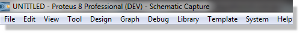
Menu bar
The Menu Bar runs across the top row of the screen and its main purpose (the selection of commands from the menus) is the same as with any other Windows application. In addition, the title bar area above the menu names is used to display certain prompt messages which indicate when the program has entered a particular editing or processing mode.
Proteus also provides access to a number of its commands and modes through the use of toolbars. The toolbars can be dragged to any of the four edges of the application window. If you have a 4K monitor or have your machine set to use high DPI settings, the icons will upscale automatically. If the haven't, they can be forced from the System Settings command on the System Menu. You'll then need to close and open Proteus for the changes to take effect:
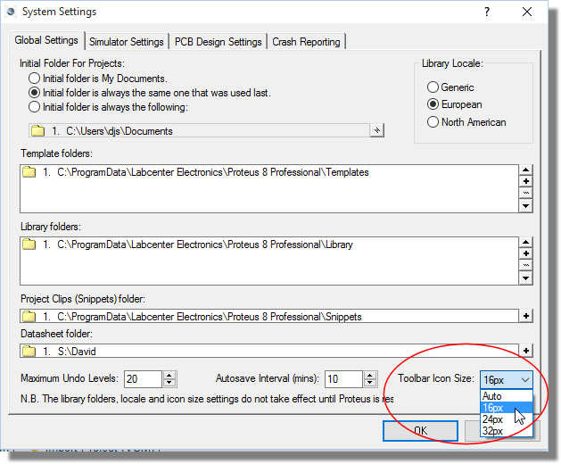
The tools located along the top of the screen (by default) provide alternative access to the menu commands, as follows:
| TITLE | TOOLBAR |
| File / Project Commands | 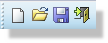 |
| Application Commands | 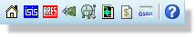 |
| Display Commands | 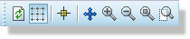 |
| Editing Commands | 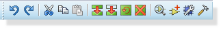 |
| Design Tools | 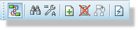 |
| Assembly Variants | 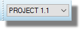 |
If you are working on a relatively small monitor, you can hide any or all of the command toolbars using the Toolbars command on the View Menu.
The toolbar located down the left hand edge of the screen select the editor mode, i.e. what happens when you click the mouse on the Editing Window.
| TITLE | TOOLBAR |
| Main Modes | |
| Gadgets | 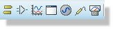 |
| 2D Graphics | 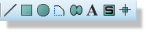 |
Note that the mode toolbar cannot be hidden, as its functions are not duplicated on the menus.
The orientation toolbar displays and controls the rotation and reflection for objects placed onto the layout.
| TITLE | TOOLBAR |
| Rotation | |
| Reflection | 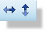 |
The edit box allows you type a rotation angle in directly, but note that in the schematic module only orthogonal angles may be entered.
When an existing object is tagged, the Rotation and Mirror icons highlight in red to show that they will modify the orientation of an object on the layout. When the icons are not highlighted, they serve to determine the orientation for new objects.
The Editing Window displays the part of the schematic that you are currently editing. The contents of the Editing Window may be redrawn using the Redraw command on the View menu. This also redraws the Overview Window. You can use this feature after any other command that has left the display somewhat untidy.
You can reposition the Editing Window over different parts of the design in several ways:
Note that you can roll the middle mouse wheel while in track-pan mode to zoom in and out of the schematic.
You can magnify or reduce the display of the board using the Zoom In and Zoom Out commands that are also invoked by the F6 and F7 shortcut keys. Alternatively, you can roll the middle mouse wheel to zoom in or out of the area currently pointed to by the mouse. Pressing F8 will display a view of the entire board. You can also use the corresponding icons on the toolbar.
If the keyboard is used to invoke the command, then the Editing Window will be redrawn to display a region centred around where the mouse cursor was pointing before. This also provides a way to effect a pan by pressing the zoom key for the current level and simultaneously pointing with the mouse at where you want centre of the new display to be.
An arbitrary degree of magnification can be achieved using the Shift-Zoom feature. A given area of the board can be selected to fill the Editing Window by holding down the SHIFT key, pressing the left mouse button and dragging out a box around the desired area. The area can be marked on either the Editing Window or the Overview Window. You can also zoom to an area by clicking the Zoom Area icon on the toolbar.
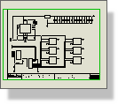
The Overview window
This window normally shows a simplified representation of the whole drawing, and has a half-inch grid on it. The cyan box marks the outline of the sheet border, whilst the green box indicates the area of the design currently visible in the Editing Window.
Clicking left at a point on the grid re-centres the Editing Window around this point, and redraws the Editing Window.
You can also use the Shift-Zoom and Track-Pan features detailed above on the Overview Window.
At other times, Overview Window is used to display a preview of an object that is selected for placement. This Place Preview feature is activated in the following circumstances for any object which may be oriented:
The place preview display is cleared automatically as soon as you proceed the place the object, or when you perform any operation other than those listed above.
The Overview Window pane can be dynamically hidden by right clicking on it and selecting the ‘Auto-Hide’ command from the resulting context menu. This is particularly useful where the parts are on the schematic and you want to maximise the Editing Window space for schematic layout.
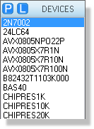
The Object Selector (Parts Bin)
The Object Selector is used for picking components, terminals, generators, graph types and so on from those that are available. It always carries a label indicating what it is listing and this serves as a prompt additional to the state of the Icon Panel as to which mode is current.
The width and position of the Object Selector can be adjusted in conjunction with the width and height of the Overview Window, as described above. You can also hide this pane to maximise the Editing Window space by right clicking on the Object Selector and selecting the Auto-Hide command from the resulting context menu.
The Context Menu for the Object Selector provides a number of mode specific options, giving you quick and easy access to functionality during schematic design.
The current co-ordinates of the mouse pointer are displayed down at the bottom right of the screen by default. The read-out can be in imperial or metric units and a false origin may be set. Further details are given under co-ordinate system.
The X-Cursor command will display a small or large cross, in addition to the mouse arrow, at the exact location of the current co-ordinates. This is particularly helpful when used in conjunction with the Real Time Snap feature, since it gives you an immediate indication of what the software thinks you are pointing at.